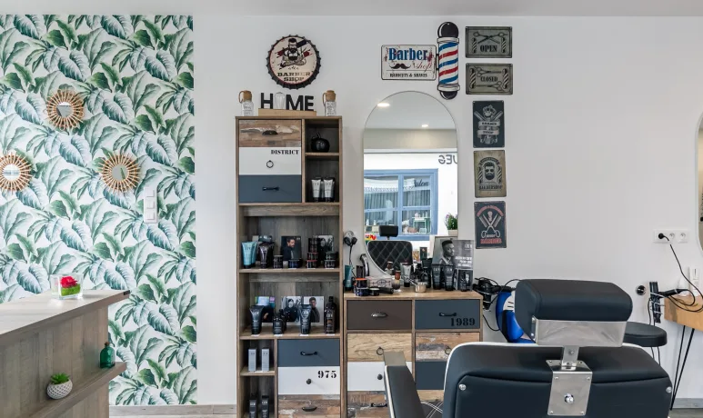

Depuis plusieurs années, nous mettons notre savoir-faire et notre passion au service de vos cheveux. Coupes, couleurs, soins et coiffures pour toutes les occasions, dans une ambiance chaleureuse et conviviale.

Bienvenue chez Ô Salon de Laurine, votre salon de coiffure situé au cœur de Plounéour-Brignogan-Plages. Dans une ambiance conviviale et apaisante, Laurine et son équipe mettent leur savoir-faire et leur passion au service de votre beauté. Que vous souhaitiez une nouvelle coupe, une coloration, un balayage, un soin ou une coiffure pour une occasion particulière, chaque prestation est réalisée avec écoute, précision et des conseils personnalisés. Femmes, hommes et enfants sont accueillis avec la même attention, afin que chacun reparte avec une coiffure qui lui ressemble et le sourire aux lèvres. Grâce à la qualité de son accueil et de ses prestations, Ô Salon de Laurine est aujourd'hui une adresse appréciée des habitants de la région.
Des coupes personnalisées pour femmes, hommes et enfants, accompagnées d'un brushing ou d'un coiffage adapté à votre style.
Colorations sur mesure pour illuminer votre chevelure, couvrir les cheveux blancs ou apporter une nouvelle touche de couleur.
Des mèches et balayages réalisés avec soin pour apporter lumière, relief et naturel à votre coiffure.
Envie de boucles durables ou de cheveux parfaitement lisses ? Profitez de prestations adaptées à vos envies.
Taille de barbe, entretien, rasage traditionnel ou forfait coupe & barbe pour un look impeccable.
Coiffures de cérémonie, de fête ou de mariage réalisées avec élégance pour sublimer vos plus beaux moments.
Pose d'ongles, vernis semi-permanent, remplissage et dépose pour des mains et des pieds soignés au quotidien.
Épilations, soins du visage et maquillage pour compléter votre mise en beauté dans un seul et même salon.
Notre équipe vous accueille avec plaisir au salon. Contactez-nous ou prenez rendez-vous directement en ligne.
07 88 20 20 77
Ô Salon de Laurine
7 Place de la Mairie
29890 Plounéour-Brignogan-Plages
Consultez les disponibilités directement sur Planity.